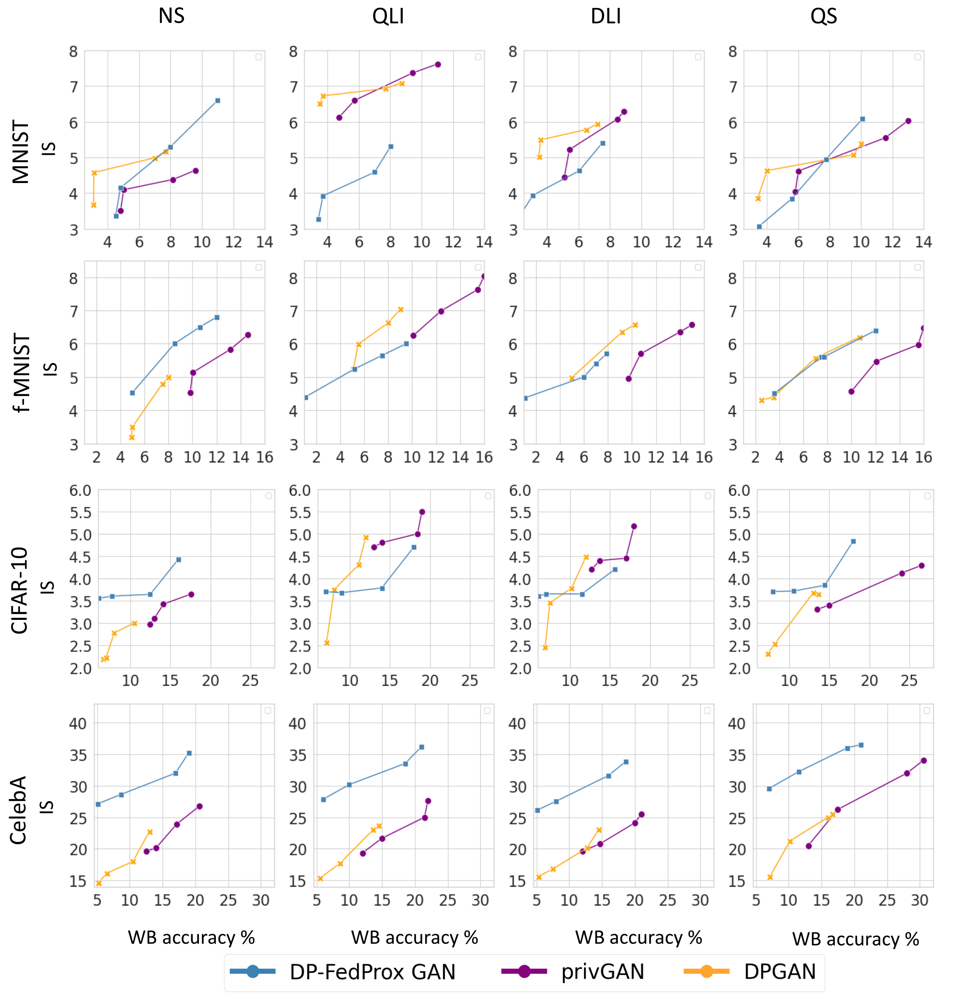
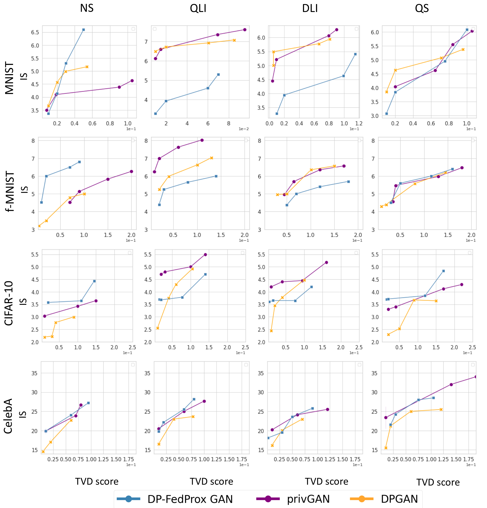
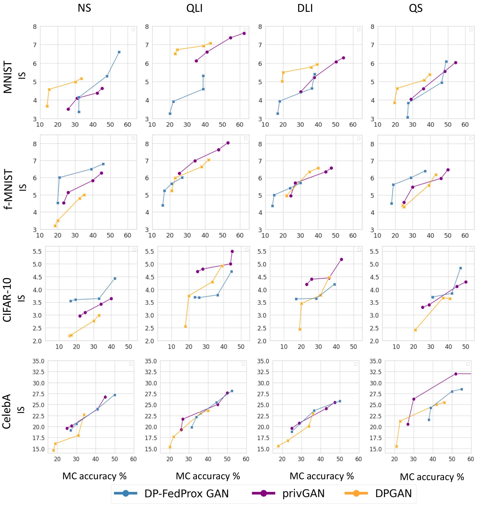
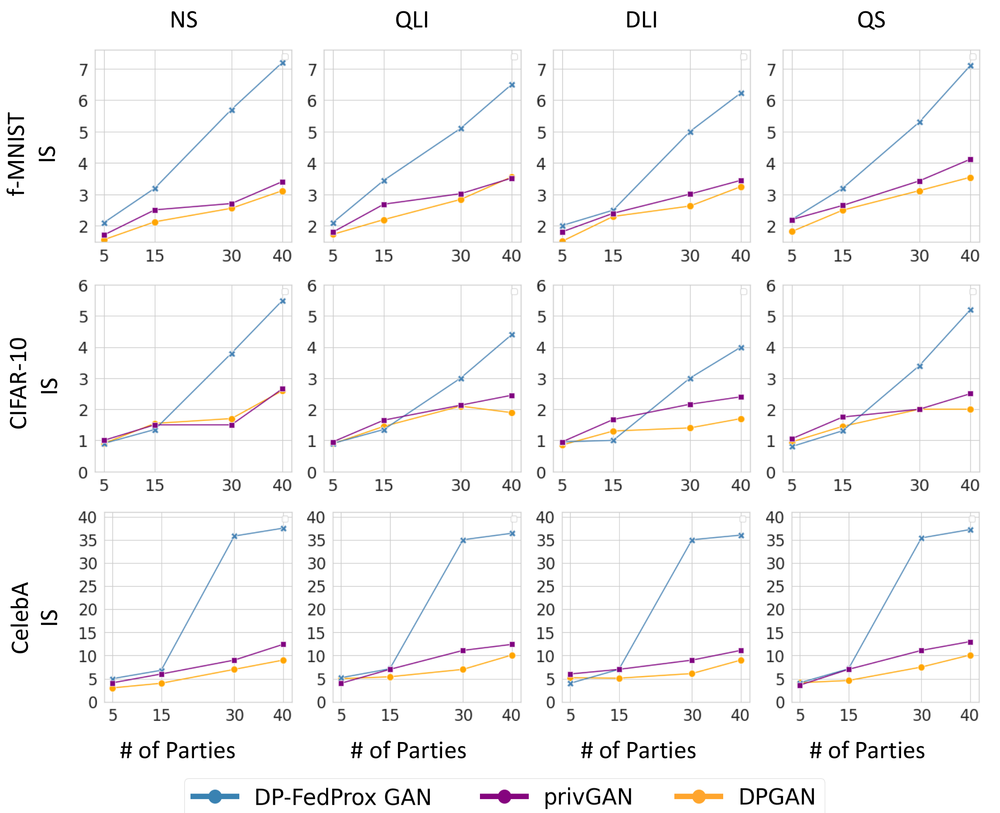
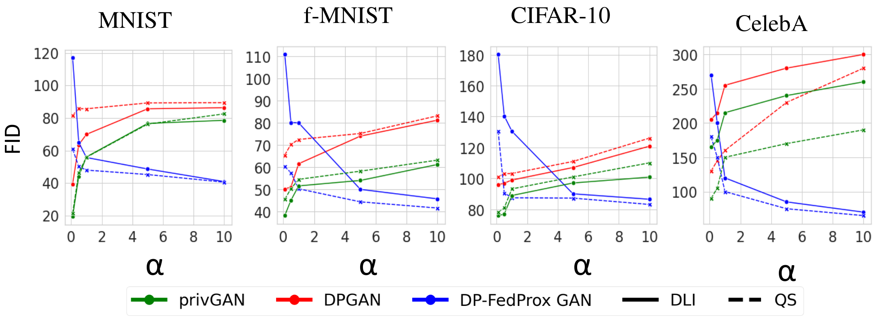

Private Data Synthesis from Decentralized Non-IID Data
(ICJNN 2023)
Muhammad Usama Saleem , Liyue Fan
For any inquiries, please email to: msaleem2@charlotte.edu
Abstract
Privacy-preserving data sharing enables a wide range of exploratory and secondary data analyses while protecting the privacy of individuals in the datasets. Recent advancements in machine learning, specifically generative adversarial networks (GANs), have shown great promise for synthesizing realistic datasets. In this work, we investigate the feasibility of training GAN models privately in practical settings, where the input data is distributed across multiple parties, and local data may be highly skewed, i.e., non-IID. We examine centralized private GAN solutions applied at each local party and propose a federated solution DP-FedProxGAN that provides strong privacy and is suitable for non-IID data. We conduct extensive empirical analysis with a wide range of non-IID settings and data from different domains. We provide in-depth discussions about the utility of the synthetic data, the privacy risks in terms of membership inference attacks, as well as the privacy-utility trade-off for private solutions.
Private Data Synthesis from Decentralized Non-IID Data
Approaches to Private Data Synthesis from Decentralized Non-IID Data: note that in both approaches, the central server may be potentially untrusted.

Privacy (White-Box Attack) vs. Utility Tradeoff
The figure illustrates the tradeoff between privacy and utility for synthetic data generation using three GAN approaches (DP-FedProx GAN, privGAN, and DPGAN) across MNIST, Fashion-MNIST, CIFAR-10, and CelebA datasets. Privacy is measured by White-Box (WB) attack accuracy (%) on the x-axis, while utility is represented by the Inception Score (IS) on the y-axis. Results are shown for four distribution settings: Non-Skew (NS), Quantity-based Label Imbalance (QLI), Distribution-based Label Imbalance (DLI), and Quantity Skew (QS). The DP-FedProx GAN approach demonstrates a superior privacy-utility tradeoff, achieving higher IS scores with lower WB attack accuracy, particularly in balanced (NS) and moderately imbalanced (QLI and DLI) distributions.
Privacy (Total Variation Distance (TVD) Attack) vs. Utility Tradeoff
The figure illustrates the privacy vs. utility tradeoff for synthetic data generation, showing Total Variation Distance (TVD) attack scores (x-axis) against Inception Score (IS) (y-axis) for three GAN approaches: DP-FedProx GAN, privGAN, and DPGAN. Results are presented across four datasets (MNIST, Fashion-MNIST, CIFAR-10, and CelebA) and four data distribution settings: Non-Skew (NS), Quantity-based Label Imbalance (QLI), Distribution-based Label Imbalance (DLI), and Quantity Skew (QS). DP-FedProx GAN consistently achieves better tradeoffs, demonstrating higher IS with lower TVD scores compared to privGAN and DPGAN, especially in NS and DLI settings. However, privGAN and DPGAN show increased vulnerability under QLI and QS distributions.
Privacy (Monte-Carlo (MC) Attack) vs. Utility Tradeoff
The figure illustrates the privacy vs. utility tradeoff for synthetic data generation under Monte-Carlo (MC) attack accuracy (x-axis) and Inception Score (IS) (y-axis) across three GAN approaches: DP-FedProx GAN, privGAN, and DPGAN. Results are shown for four datasets (MNIST, Fashion-MNIST, CIFAR-10, and CelebA) and four data distribution settings: Non-Skew (NS), Quantity-based Label Imbalance (QLI), Distribution-based Label Imbalance (DLI), and Quantity Skew (QS). DP-FedProx GAN achieves a more favorable tradeoff in most scenarios, particularly in NS and DLI settings, while privGAN and DPGAN demonstrate higher MC attack risks, especially under QLI and QS settings.
Varying Number of Parties
The figure illustrates the impact of the number of participating parties on the Inception Score (IS) for synthetic data generation across three GAN approaches: DP-FedProx GAN, privGAN, and DPGAN. Results are shown for four datasets (Fashion-MNIST, CIFAR-10, and CelebA) under four data distribution settings: Non-Skew (NS), Quantity-based Label Imbalance (QLI), Distribution-based Label Imbalance (DLI), and Quantity Skew (QS). As the number of parties increases, DP-FedProx GAN demonstrates significant improvements in IS, highlighting its capability to effectively utilize contributions from multiple parties. In contrast, privGAN and DPGAN show relatively smaller gains, indicating limitations in handling distributed data.
Varying Concentration Parameters
The figure illustrates the Fréchet Inception Distance (FID) scores for synthetic data generation across varying concentration parameters (α) in three GAN approaches: privGAN, DPGAN, and DP-FedProx GAN. Results are shown for four datasets (MNIST, Fashion-MNIST, CIFAR-10, and CelebA) and two data distribution settings: Distribution-based Label Imbalance (DLI, solid lines) and Quantity Skew (QS, dashed lines). Lower FID scores indicate better quality synthetic data. DP-FedProx GAN demonstrates superior performance in handling highly imbalanced distributions (lower α values), especially for complex datasets like CelebA, while privGAN and DPGAN show higher FID scores, indicating poorer performance in such scenarios.
